Inspirations
Vessels that have inspired Curious Cat to be what she is today.
Energy Observer
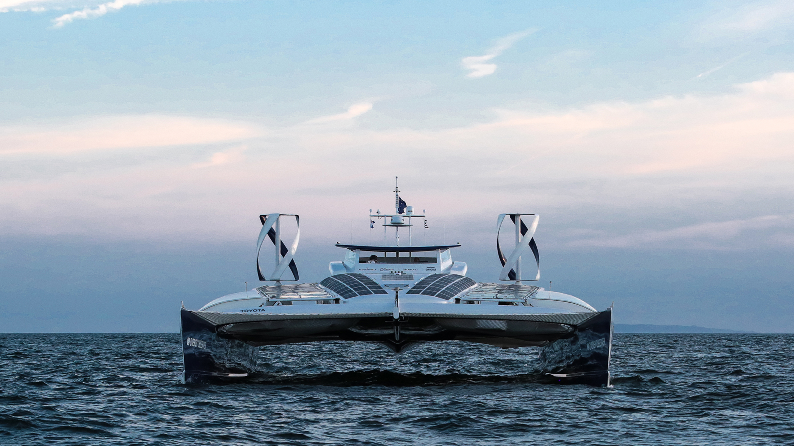
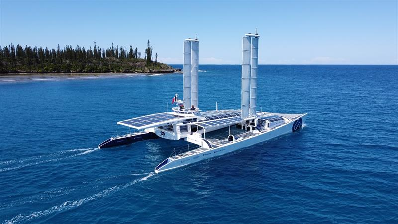
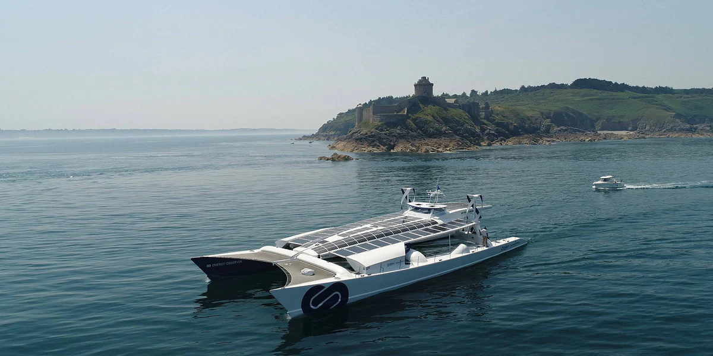
A beautiful hydrogen/wind/solar/electric catamaran. The main idea behind this unique vessel is to combine various sources of energy to propel electric motors, to always be able to move. My main object of interest is dual-faced solar panels.
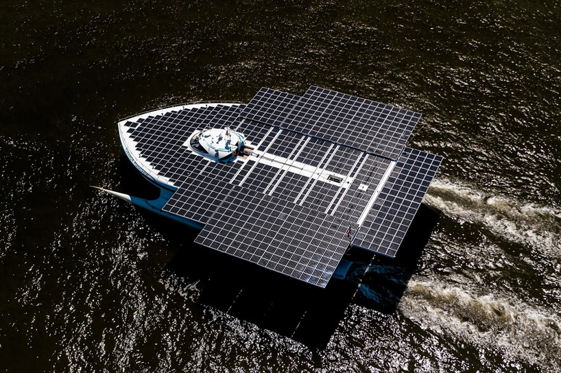
Tûranor PlanetSolar
The largest solar-powered boat in the world. Launched in 2010, this catamaran is 102' long. Built by Howaldtswerke-Deutsche Werft and designed by LOMOcean Marine. The vessel is a giant floating solar panel, and I hope to get one day a chance to see her with my own eyes.
Silent Yacht
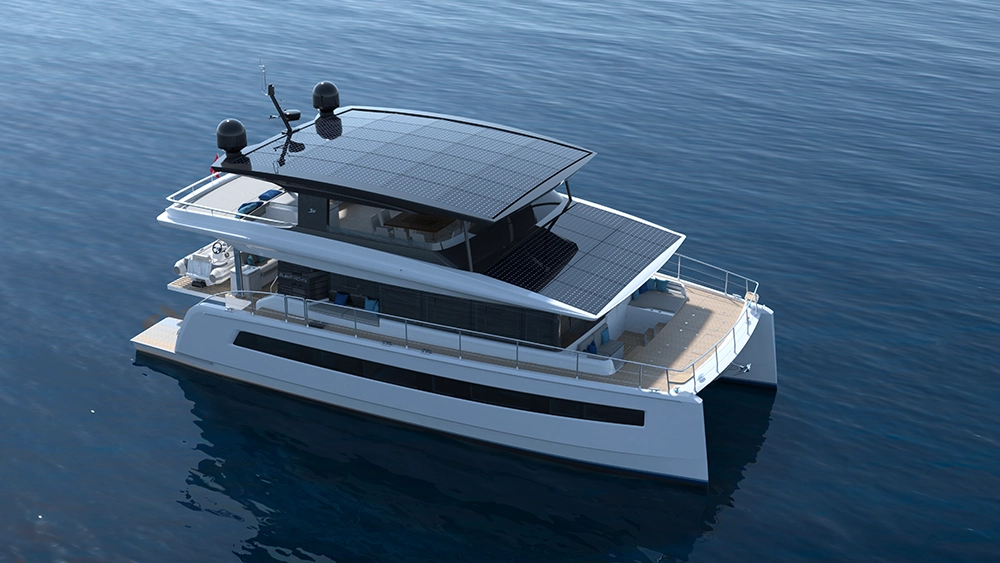
These luxury electric power cats need no introduction. The main point of my interest in them is their massive photovoltaic system that theoretically allows infinite cruising range given enough sunlight. Achieving that is one of the main goals that Curious Cat has.
Ya — 2015 custom fossil-free monohull sailboat
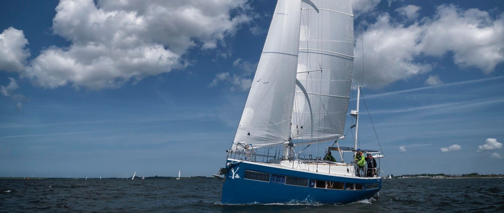
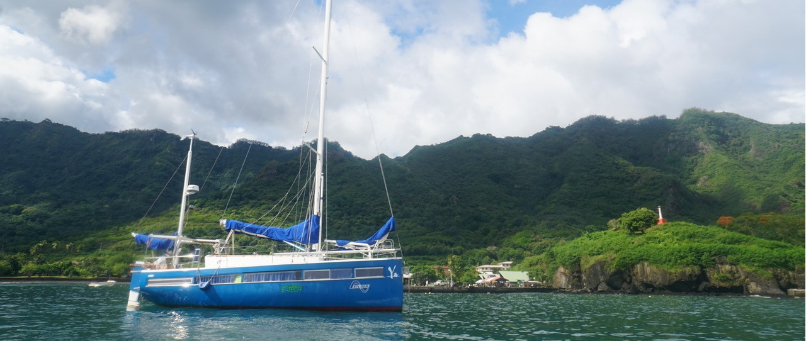
Built out of vinylester, equipped with two 7.5KW motors by E-Tech. This is what I want to do with my boat, the way I want Curious Cat to be: green, sustainable, free. More info is available on their website.
Green eMotion — 2010 African Cats GreenCat 445


I was pleasantly surprised to discover this rare and special 43' catamaran. She was a bit out of my budget, but already electric, built out of best materials on the market, looking incredibly beautiful on the inside, and equipped with unique retractable propulsion system that can be lifted completely out of the water when not in use — as all propulsion systems on sailboats should be, in my humble opinion. Both bottom and top parts of this vessel are built as one piece (monocoque construction), which makes it stronger and lighter — a feature only Seawind and couple other makers are known for.
Kawaakari — 2013 Erik Lerouge 137


An absolute stunner, this magnificent 45' vessel is a carbon kevlar daggerboard cat capable of sailing at 26 knots! Early in my search I was looking strictly for Erik Lerouge designs — that’s how much I like them.
Blue Saga — 2018 LUNA 47
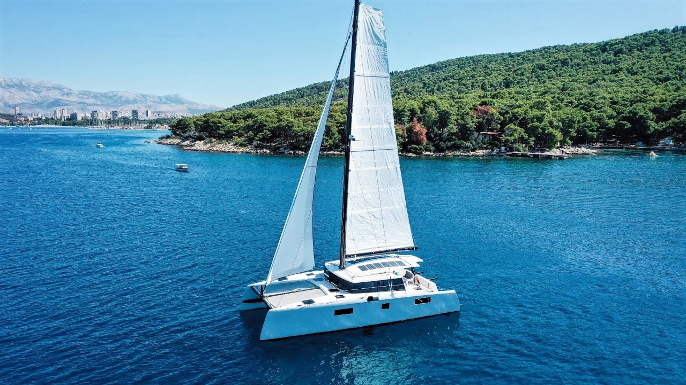
This is a high-end 47' sailing liveaboard catamaran that incorporates many interesting modern technologoies. Videos made by her owners served as great help in my research. All-electric propulsion, MacGlide environmentally-friendly antifouling sticker, flush port windows and hatches — those are the things that I imagined having on my dream boat.
Siva — 2012 Schionning Spirited 380
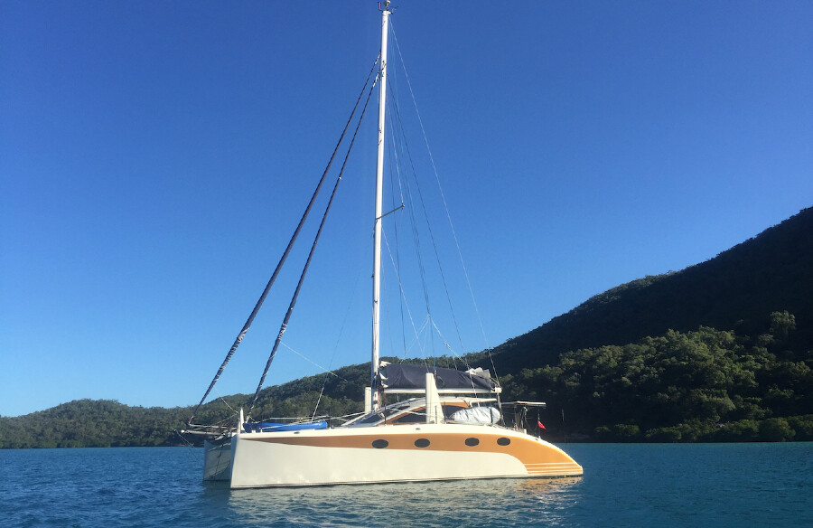
Equally beautiful inside and out. I really like the clean tidy interior this 38' Australian daggerboard cat has. On one of the pictures I spotted a strange shiny thing on the wall, that was a compact wall-mounted washer/dryer by Daewoo. Now, thanks to wonders of capitalism, Curious Cat has a washing machine aboard!
MAXI JAZZ — 2010 Feral 50


Custom-made one-of-a-kind composite 50' performance cruising catamaran built by Waikato Marine Composites in New Zealand. Designed by Nic Bailey. The construction is carbon fiber kevlar vacuumed hull with incredibly beautiful lines inside and out. Both the interior and body somehow remind me of a flying saucer. Painted with Atlex Elite Polyurethane, this is one of the vessels I look up to, a real masterpiece.
Shooting Star — 2007 Morrelli & Melvin
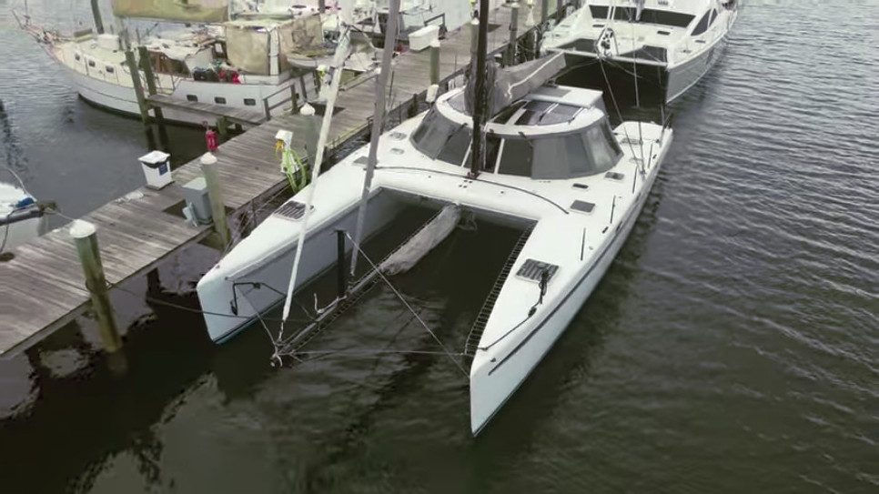
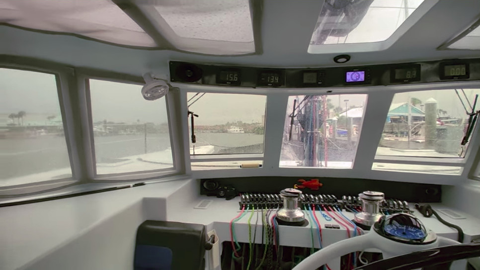
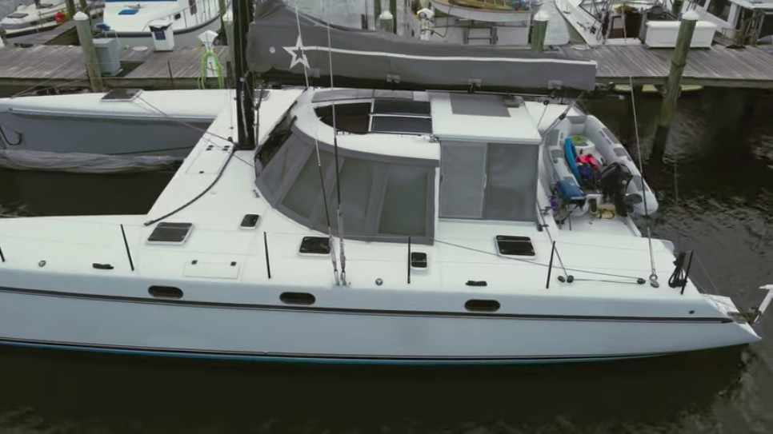
Custom one-of-a-kind all-carbon 50' luxury cruising catamaran built by Morrelli & Melvin. Early inspiration for Gunboats, this beauty is strong, light, and lets you sail while being protected from nasty wind and water. I wish there were more cats in the world like this masterpiece.